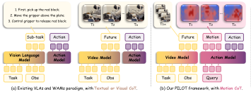
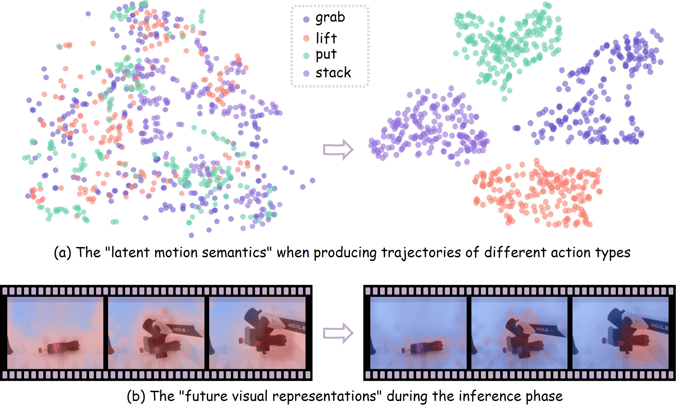
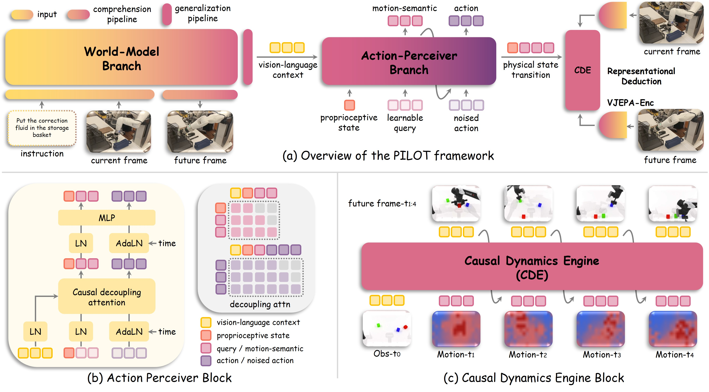
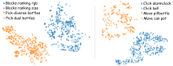
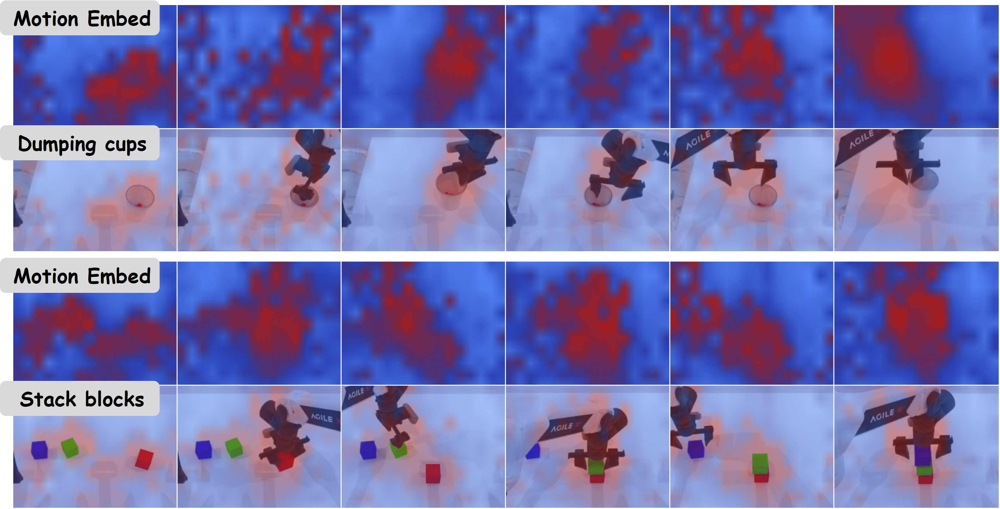
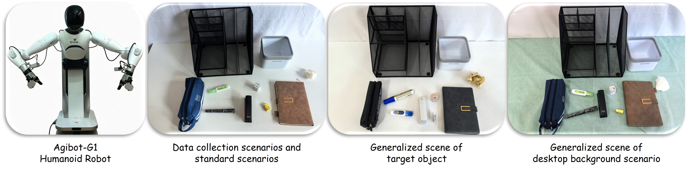
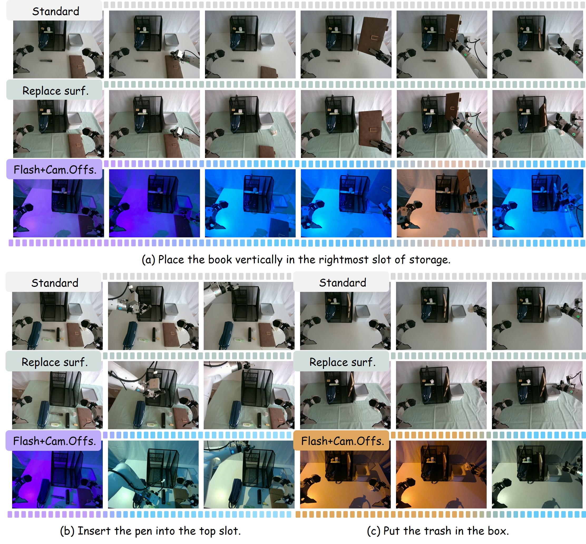

Standard Manipulation
Eight desktop tasks on Agibot-G1, evaluated with 50 rollouts per task.
PILOT learns what should change in the world before refining how the robot should move.

Third-person view of PILOT on the Agibot-G1 humanoid robot. Standard: 6 objects across 2 camera perspectives. Flash+Cam.Offset: strobe-light background with camera angle offset. Desk: replaced table surface.
Predicting what a future image looks like is not the same as understanding how an action changes the world. Visual reconstruction can entangle background appearance with motion, forcing the action model to infer high-level state evolution and low-level motor commands from the same representation. PILOT addresses this with Motion Chain of Thought (Motion-CoT): learnable latent tokens that separate motion semantics from fine-grained trajectory generation.
Representational Deduction (RD) supervises these tokens through a Causal Dynamics Engine (CDE), which predicts future states in a frozen VJEPA2-AC representation space. Causally-decoupled attention lets motion semantics guide action decoding without absorbing action diffusion noise. Future observations are supervision targets, not inference inputs; neither future-frame generation nor the CDE is needed to execute the policy.
Across simulation and real-robot manipulation, the model combines strong task performance with zero-shot robustness and data-efficient adaptation: 81.0% on LIBERO-Plus, 68.3% on real-world generalization settings, and 62.4% real-world success when fine-tuned with only 10% of the demonstrations.


A single understanding pass through the Wan2.2 backbone encodes the current observation and instruction. A set of 64 learnable queries distills high-level motion semantics from this context.
Representational Deduction trains the CDE to predict the frozen encoder's future-state representation from the current one, conditioned on Motion-CoT and proprioception. A Smooth L1 objective teaches the queries what changes under an action, rather than how pixels should look.
Causally-decoupled attention allows action tokens to attend to motion semantics, but blocks the reverse flow of action noise into the query tokens. Flow-time conditioning is applied only to action tokens, so the motion context remains stable during trajectory refinement.
Wan2.2 provides a 196-token vision-language context. Auxiliary future-frame prediction preserves the pretrained visual and physical prior during training.
A Perceiver-style flow-matching head learns motion semantics and decodes continuous action chunks. At inference, it uses only the current observation, instruction, and robot state.
The frozen VJEPA2-AC encoder supplies 256 patch tokens of dimension 1408. The trainable CDE predicts the future representation, and is omitted from the policy's inference path.
Evaluating task success, robustness to visual and structural changes, and adaptation with limited real-robot demonstrations. Results below reproduce the manuscript's reported success rates (%).
| Method | Size | Spatial | Object | Goal | Long | Average |
|---|---|---|---|---|---|---|
| Vision-Language-Action Models | ||||||
| π0.5 | 3.5B | 98.8 | 98.2 | 98.0 | 92.4 | 96.2 |
| GR00T-N1.6 | 3.3B | 97.7 | 98.5 | 97.5 | 94.4 | 97.0 |
| OpenVLA-OFT | 7B | 97.6 | 98.4 | 97.9 | 94.5 | 97.1 |
| Latent Action Models | ||||||
| LAPA | 7B | 73.8 | 74.6 | 58.8 | 55.4 | 65.7 |
| UniVLA | 7B | 96.5 | 96.8 | 95.6 | 92.0 | 95.2 |
| Mantis | 5.8B | 98.8 | 99.2 | 94.4 | 94.2 | 96.7 |
| VLA-JEPA | 3B | 96.2 | 99.6 | 97.2 | 95.8 | 97.2 |
| World-Action Models | ||||||
| F1 | 4B | 98.2 | 97.8 | 95.4 | 91.3 | 95.7 |
| Fast-WAM | 6B | 98.2 | 100.0 | 97.0 | 95.2 | 97.6 |
| Motus | 8B | 96.8 | 99.8 | 96.6 | 97.6 | 97.7 |
| PILOT (Ours) | 5.4B | 97.1 | 99.2 | 98.1 | 97.2 | 97.9 |
Manuscript Table 1. PILOT reaches 97.9% average success, with 98.1% on Goal and 97.2% on Long. Model sizes and suite scores are reported as in the manuscript.
| Method | Size | Camera | Robot | Language | Lighting | Background | Noise | Layout | Average |
|---|---|---|---|---|---|---|---|---|---|
| Vision-Language-Action Models | |||||||||
| ECoT | 3B | 0.3 | 26.8 | 40.2 | 42.6 | 16.4 | 10.2 | 36.9 | 24.3 |
| Spatial Forcing | 3.3B | 20.1 | 13.4 | 40.9 | 29.1 | 33.4 | 25.7 | 39.3 | 29.1 |
| π0-FAST | 3.3B | 65.1 | 21.6 | 61.0 | 73.2 | 73.2 | 74.4 | 68.8 | 61.6 |
| OpenVLA-OFT | 7B | 56.4 | 31.9 | 79.5 | 88.7 | 93.3 | 75.8 | 74.2 | 69.6 |
| Latent Action Models | |||||||||
| UniVLA | 7B | 1.8 | 46.2 | 69.6 | 69.0 | 81.0 | 21.2 | 31.9 | 42.9 |
| PokeVLA | 7B | 84.7 | 46.1 | 84.8 | 94.6 | 82.6 | 89.8 | 77.2 | 79.3 |
| World-Action Models | |||||||||
| WorldVLA | 7B | 0.1 | 27.9 | 41.6 | 43.7 | 17.1 | 10.9 | 38.0 | 25.0 |
| Fast-WAM | 6B | 16.4 | 44.5 | 68.9 | 78.2 | 53.7 | 37.7 | 60.7 | 51.5 |
| PILOT (Ours) | 5.4B | 76.0 | 70.0 | 84.0 | 92.0 | 85.0 | 78.0 | 82.0 | 81.0 |
Manuscript Table 2. Zero-shot transfer from standard LIBERO across seven perturbation types. PILOT reaches 81.0% overall, including 70.0% under robot changes and 82.0% under layout changes.
| Method | Pick and Place (6) | From Cuttingboard (5) | From Placemat (4) | From Tray (5) | From Plate (4) | Average |
|---|---|---|---|---|---|---|
| GR00T N1.5 | 45.3 | 46.4 | 45.5 | 48.8 | 56.5 | 48.2 |
| GR00T N1.6 | 24.2 | 56.9 | 51.9 | 55.1 | 57.5 | 47.6 |
| DiT4DiT | 50.3 | 57.6 | 39.0 | 46.4 | 60.0 | 50.8 |
| UWM-XL | 30.7 | 17.4 | 10.0 | 17.2 | 16.2 | 19.2 |
| StarVLA | 50.3 | 52.8 | 38.0 | 39.2 | 58.5 | 47.8 |
| LDA | 56.3 | 64.2 | 47.8 | 53.4 | 53.0 | 55.4 |
| VP-VLA | 54.3 | 60.8 | 54.5 | 46.0 | 53.5 | 53.8 |
| PhysBrain | 52.7 | 52.0 | 48.0 | 46.0 | 62.5 | 50.0 |
| LangForce | 55.7 | 53.2 | 48.0 | 47.2 | 58.5 | 52.6 |
| FastWAM | 52.7 | 60.6 | 47.2 | 54.8 | 58.5 | 56.7 |
| Motus | 49.3 | 56.6 | 43.8 | 50.8 | 54.5 | 53.1 |
| PILOT (Ours) | 59.7 | 61.2 | 56.0 | 74.8 | 60.5 | 62.6 |
Manuscript Table 3. PILOT achieves 62.6% overall, compared with 56.7% for FastWAM; the largest category result is 74.8% for tasks starting from a tray.
Manuscript Table 10. PnP = pick and place; Nv = novel; CB = cuttingboard; PM = placemat; TR = tray; PL = plate; CbBox = cardboard box; TBasket = tiered basket; TShelf = tiered shelf; Cab. = cabinet; Micro. = microwave. Reported category and overall averages are retained.
| Task | GR00T N1.5 | GR00T N1.6 | DiT4DiT | UWM-XL | StarVLA | LDA | VP-VLA | PhysBrain | LangForce | FastWAM | Motus | PILOT (Ours) |
|---|---|---|---|---|---|---|---|---|---|---|---|---|
| PnP Close | ||||||||||||
| PnP Bottle to Cab. | 54 | 51.5 | 48 | 41 | 46 | 76 | 54 | 74 | 72 | 58 | 55 | 70 |
| PnP Can to Drawer | 50 | 13 | 74 | 53 | 80 | 71 | 72 | 68 | 78 | 60 | 57 | 54 |
| PnP Cup to Drawer | 38 | 8.5 | 52 | 12 | 54 | 41 | 44 | 42 | 46 | 45 | 42 | 50 |
| PnP Milk to Micro. | 60 | 14 | 50 | 25 | 48 | 52 | 74 | 54 | 56 | 54 | 50 | 68 |
| PnP Potato to Micro. | 32 | 41.5 | 36 | 29 | 28 | 41 | 34 | 24 | 36 | 43 | 40 | 62 |
| PnP Wine to Cab. | 38 | 16.5 | 42 | 24 | 46 | 57 | 48 | 54 | 46 | 56 | 52 | 54 |
| PnP * to * Close (Avg) | 45.3 | 24.2 | 50.3 | 30.7 | 50.3 | 56.3 | 54.3 | 52.7 | 55.7 | 52.7 | 49.3 | 59.7 |
| PnP Novel From Cuttingboard | ||||||||||||
| NvCB to Basket | 38 | 58 | 52 | 18 | 48 | 65 | 66 | 62 | 66 | 64 | 60 | 84 |
| NvCB to CbBox | 46 | 46.5 | 48 | 14 | 40 | 69 | 54 | 44 | 40 | 58 | 54 | 58 |
| NvCB to Pan | 58 | 68.5 | 76 | 20 | 68 | 75 | 74 | 56 | 68 | 72 | 68 | 86 |
| NvCB to Pot | 62 | 65 | 62 | 25 | 52 | 61 | 54 | 58 | 48 | 59 | 55 | 44 |
| NvCB to TBasket | 28 | 46.5 | 50 | 10 | 56 | 51 | 56 | 40 | 44 | 50 | 46 | 34 |
| Cuttingboard * (Avg) | 46.4 | 56.9 | 57.6 | 17.4 | 52.8 | 64.2 | 60.8 | 52 | 53.2 | 60.6 | 56.6 | 61.2 |
| PnP Novel From Placemat | ||||||||||||
| NvPM to Basket | 30 | 58.5 | 50 | 16 | 42 | 53 | 48 | 42 | 54 | 55 | 51 | 72 |
| NvPM to Bowl | 60 | 57.5 | 56 | 10 | 44 | 55 | 74 | 56 | 62 | 58 | 54 | 58 |
| NvPM to Plate | 56 | 63 | 32 | 12 | 48 | 59 | 70 | 80 | 52 | 54 | 50 | 64 |
| NvPM to TShelf | 26 | 28.5 | 18 | 2 | 18 | 24 | 26 | 14 | 24 | 22 | 20 | 30 |
| Placemat * (Avg) | 45.5 | 51.9 | 39 | 10 | 38 | 47.8 | 54.5 | 48 | 48 | 47.2 | 43.8 | 56 |
| PnP Novel From Tray | ||||||||||||
| NvTR to CbBox | 52 | 51.5 | 38 | 25 | 38 | 65 | 44 | 40 | 50 | 62 | 58 | 86 |
| NvTR to Plate | 48 | 71 | 56 | 18 | 56 | 63 | 66 | 66 | 58 | 64 | 60 | 94 |
| NvTR to Pot | 60 | 64.5 | 54 | 25 | 50 | 55 | 38 | 52 | 62 | 60 | 56 | 92 |
| NvTR to TBasket | 52 | 57 | 46 | 16 | 36 | 51 | 58 | 50 | 44 | 52 | 48 | 80 |
| NvTR to TShelf | 32 | 31.5 | 38 | 2 | 16 | 33 | 24 | 22 | 22 | 36 | 32 | 22 |
| Tray * (Avg) | 48.8 | 55.1 | 46.4 | 17.2 | 39.2 | 53.4 | 46 | 46 | 47.2 | 54.8 | 50.8 | 74.8 |
| PnP Novel From Plate | ||||||||||||
| NvPL to Bowl | 58 | 57 | 56 | 8 | 60 | 53 | 52 | 54 | 54 | 56 | 52 | 52 |
| NvPL to CbBox | 44 | 43.5 | 58 | 10 | 50 | 43 | 44 | 50 | 48 | 50 | 46 | 52 |
| NvPL to Pan | 60 | 51 | 68 | 20 | 54 | 55 | 56 | 68 | 54 | 60 | 56 | 50 |
| NvPL to Plate | 64 | 78.7 | 58 | 27 | 70 | 61 | 62 | 78 | 78 | 68 | 64 | 88 |
| Plate * (Avg) | 56.5 | 57.5 | 60 | 16.2 | 58.5 | 53 | 53.5 | 62.5 | 58.5 | 58.5 | 54.5 | 60.5 |
| Average (All 24 Tasks) | 48.2 | 47.6 | 50.8 | 19.2 | 47.8 | 55.4 | 53.8 | 50 | 52.6 | 56.7 | 53.1 | 62.6 |
Eight desktop tasks on Agibot-G1, evaluated with 50 rollouts per task.
Lighting and camera shifts, a replaced desk surface, and changed object appearance.
Fine-tuning with only 10% of demonstrations, compared with 40.8% for Fast-WAM.
| Method | Size | Standard Tasks | Standard Average |
Generalization | Generalization Average |
Few-Shot (10% Data) | |||||||||
|---|---|---|---|---|---|---|---|---|---|---|---|---|---|---|---|
| Pen | Eraser | Correction Fluid | Charger | Pencil Case | Stapler | Book | Trash | Flash + Camera Offset | Desk | Color | |||||
| π0 | 3.3B | 70 | 82 | 46 | 78 | 32 | 62 | 52 | 72 | 61.8 | 38 | 42 | 36 | 38.7 | 28.4 |
| OpenVLA | 7B | 64 | 76 | 40 | 72 | 26 | 56 | 46 | 66 | 55.8 | 32 | 36 | 30 | 32.7 | 24.6 |
| GR00T-N1 | 3.4B | 74 | 86 | 50 | 82 | 36 | 66 | 56 | 76 | 65.8 | 42 | 46 | 40 | 42.7 | 32.8 |
| π0.5 | 3.3B | 80 | 90 | 56 | 86 | 42 | 72 | 62 | 82 | 71.3 | 48 | 52 | 44 | 48.0 | 38.2 |
| Cosmos-Policy | 6B | 76 | 88 | 52 | 84 | 38 | 68 | 58 | 78 | 67.8 | 44 | 48 | 42 | 44.7 | 34.6 |
| Fast-WAM | 6B | 82 | 92 | 58 | 88 | 44 | 74 | 64 | 84 | 73.3 | 50 | 54 | 46 | 50.0 | 40.8 |
| PILOT (Ours) | 5.4B | 90 | 100 | 70 | 94 | 56 | 88 | 72 | 94 | 83.1 | 72 | 68 | 64 | 68.3 | 62.4 |
Manuscript Table 4. Standard evaluation uses 50 rollouts per task. The generalization average covers three transfer settings; few-shot results use 10% of the training demonstrations. These are distinct evaluation settings, not subsets to be combined into one score.
| Future Prediction | Motion-CoT | RD | CDE | Decoupled Attention | LIBERO | RoboCasa-GR1 |
|---|---|---|---|---|---|---|
| × | × | – | – | – | 91.3 | 51.2 |
| ✓ | × | – | – | – | 93.6 | 54.8 |
| × | ✓ | × | × | × | 94.5 | 56.7 |
| × | ✓ | ✓ | ✓ | × | 96.1 | 59.8 |
| × | ✓ | ✓ | ✓ | ✓ | 96.9 | 61.3 |
| ✓ | ✓ | ✓ | ✓ | ✓ | 97.9 | 62.6 |
Manuscript Table 5. Motion-CoT alone improves the baseline from 91.3 to 94.5 on LIBERO and from 51.2 to 56.7 on RoboCasa-GR1. RD with CDE supervision and causally-decoupled attention contribute further gains; combining them with future-frame supervision yields 97.9 and 62.6.
| Pipeline | Size | RoboCasa-GR1 | Latency (ms) |
|---|---|---|---|
| Predict-then-Act | 5.4B | 58.4 | 1329.95 |
| Decoupled (PILOT) | 5.4B | 62.6 | 111.60 |
Manuscript Table 6. With the same 5.4B architecture, the decoupled pipeline reduces reported latency from 1329.95 ms to 111.60 ms (11.9× faster) while improving success from 58.4% to 62.6%. Future-frame generation and the RD branch are used for supervision, not policy inference.
The manuscript examines the learned representations from two complementary views: task-level structure in the motion tokens, and spatial structure in predicted future states.




First-person (wrist camera) view. Standard: 8 objects. Flash+Cam.Offset: strobe lighting with camera displacement. Desk: background table surface replaced. Color: object appearance altered.
Selected rollouts from the 24-task RoboCasa-GR1 evaluation. PILOT achieves 62.6% reported average success; full category and per-task comparisons are available in the Experiments section.
@misc{pilot2026,
title = {Motion Chain of Thought: Disentangling Motion Semantics from Visual Representations for Robotic Manipulation},
year = {2026}
}